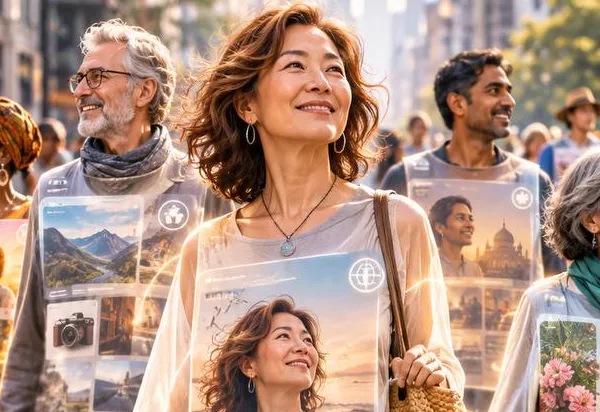
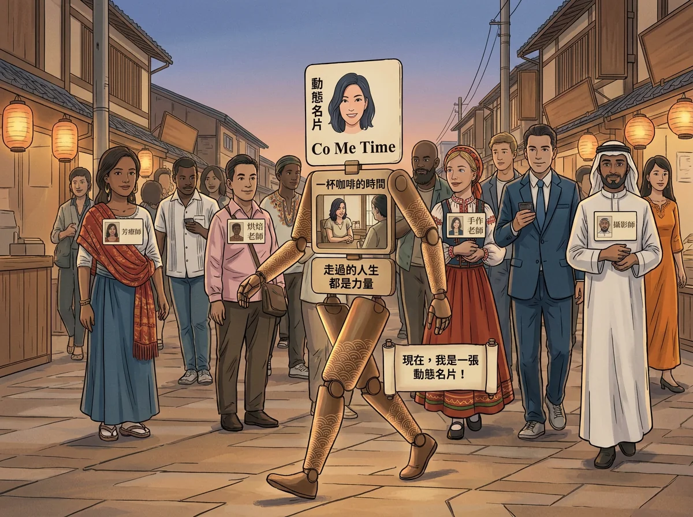
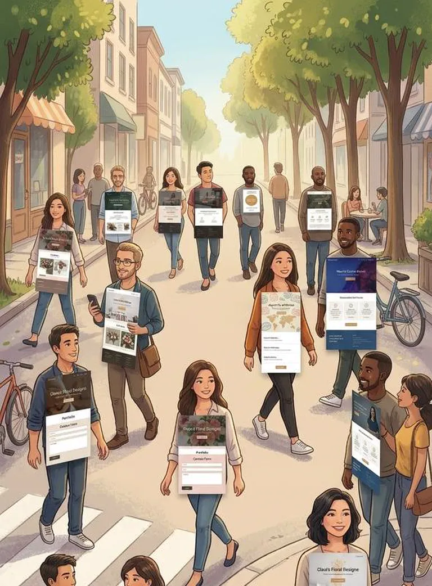
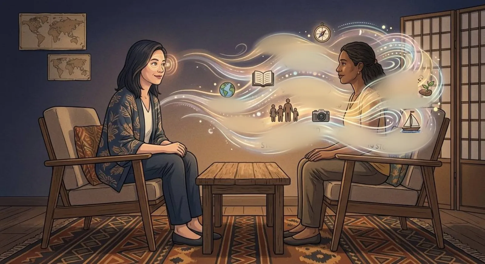
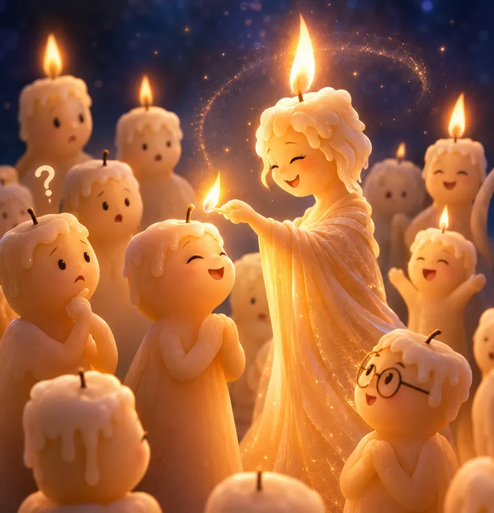
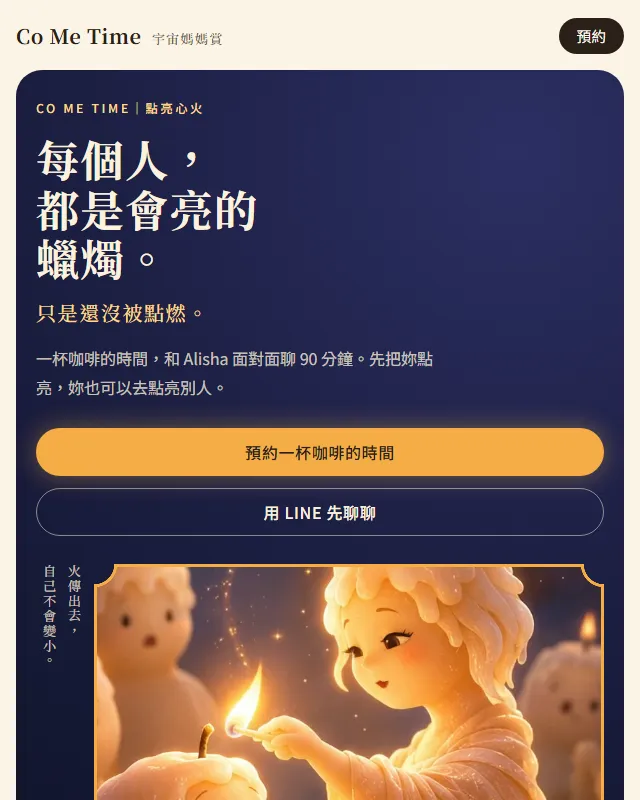

火傳出去，
自己不會變小。
習慣照亮別人，卻不知道怎麼把自己的故事說清楚？
妳缺少的，可能不是更多的行銷工具，而是一次真正理解自己的機會。
- 長久以來，妳習慣為了家人與各種角色而活。
- 心裡有很多感受，很難跟身邊的人解釋。
- 有專業、有產品、有服務，卻不知道怎麼介紹才能讓人記住。
- 想拍影片，卻不知道要說什麼，也不知道怎麼呈現自己。
- 腦子裡有很多想法，不知道怎麼變成真的。
從內在認識自己，讓外在呈現真正的妳。
從內在釐清自己，到外在呈現品牌，由 Alisha 為妳整合規劃，四分之三團隊共同實現。
-
01 點火
一場專屬於妳的 Coffee Me Time
預約與 Alisha 一對一深度交流 90 分鐘，找個舒服的空間，喝杯喜歡的飲品，從聊天開始，重新看見自己。
-
02 亮起來
整理妳的故事與價值，找到自己的定位和服務項目。
-

動態名片
有了定位，就能拍短影音，有自己的網站或系統。妳走到哪，名片就到哪。
-
04 點下一根
妳用自己的服務，陪下一個人亮起來。
亮起來的妳，就是最有力量的個人品牌。
讓每一個人，都有一張被看見的數位名片。
在 AI 時代，每個人都可以是一間自己的公司。無論妳是創業者、專業工作者，還是擁有獨特故事與專長的個人，都需要一個讓世界認識妳的入口。
透過個人影片、專屬網站與數位內容，我們為妳量身打造一對一的「動態名片」——讓別人深度看見妳、真正認識妳，也開啟源源不絕與妳連結的機會。


每個人，都值得擁有一張自己的數位名片。
讓妳的專業、故事與服務，不只存在於認識妳的人之間，而是透過不同的數位工具，讓更多人認識妳、找到妳。
-
01
短影音
讓別人看見真實的妳
從內容主題、腳本企劃到鏡頭前的表達，Alisha 陪妳跨出第一步。若有進階拍攝需求，也能協助媒合專業拍攝資源。
-
02
個人網站
讓別人認識妳的專屬入口
依照妳的品牌定位與服務內容，由四分之三團隊協助製作個人官網或一頁式網站，讓妳的故事、專業與服務有一個完整的呈現空間。
-
03
數位系統
讓經營更有效率
從預約、客戶資料管理到日常作業，依照實際需求導入合適的工具，減少重複工作，把時間留給真正重要的人與事。
不需要一次全部做到，也不必跟著別人的方式走。先透過一場深度對話，了解妳目前的狀態與需求，再一起討論適合妳的方向與執行方式。
嗨，我是 Alisha。
我曾在莫斯科留學，也在日本生活多年；接觸身心靈與自我探索超過十年，經歷過創業、貿易、婚姻，也成為三個孩子的媽媽。
人生走過不同的階段，我也曾經把自己放到最後，經歷過迷惘、卡關，以及重新認識自己的過程。
或許因為這些經歷，很多人喜歡找我聊天，分享生活、工作，甚至那些不知道該怎麼說出口的心事。
我發現自己很擅長透過對話，聽見一個人話語背後真正想表達的事，也看見那些連當事人都還沒發現的特點、天賦與可能性。
我相信，每個人走過的路都有意義。
我想做的，就是陪妳重新認識自己，把過去累積的人生經驗，整理成妳看得見的價值，也找到接下來想走的方向。
讀完整的自我介紹 →中文、日文、俄文、英文、台語，還有一種，叫靈性。

中文：妳好。
多元語言讓我能傾聽不同世界的故事，也讓我成為那座牽線的橋樑。需要影像拍攝，我替妳安排合適的老師；需要網站與系統架構，四分之三團隊與專業工程師就在這裡為妳接棒。
靈性這一塊，學校沒教，但妳懂的頻率我都懂。那些關於能量、直覺與靈魂的功課，妳不需要費心解釋；我能聽懂妳的內在語言，並幫妳「翻譯」成大眾聽得懂、用得上的日常實踐。
讓想法，真正成為可能。
好的想法，不該只停留在腦海裡。
Alisha 負責理解需求、梳理想法與整合資源，四分之三團隊則運用 AI 與技術，將創意轉化為實際可運用的網站、App 與數位工具。
從最初的想法，到最後的實際呈現，妳不需要自己懂技術，也不必獨自摸索、分別尋找不同的專業團隊。

一開始，是 Alisha 傳來的一張圖

後來，變成妳正在看的這一頁
先回答妳可能想問的。
我還不知道自己想要什麼，也可以開始嗎？
當然可以。其實這正是 Co Me Time 想陪妳做的事。
我們不需要一開始就有明確答案，而是透過對話、人生經驗整理，以及不同的探索工具，一起看看妳走過的路、在意的事，以及內心真正想要的生活。
有時候，不是妳沒有方向，而是太久沒有把注意力放回自己身上。
我沒有什麼特別的專長，也能建立自己的品牌嗎？
當然可以。品牌不只是專業技能，也包含妳的經歷、觀點、個性與故事。
每個人的生命經驗都是獨特的，我們會一起整理妳的特色與價值，找到值得被看見的地方，再思考如何透過影片、網站或其他方式呈現。
在照顧別人之前，我是不是應該先照顧好自己？
是的。順序是先看見自己，再與世界連結。
就像一根蠟燭點亮另一根，自己的光不會因此減少。妳已經照顧別人很久了，現在也值得留一段時間給自己。
做個人品牌，需要委屈自己去迎合市場嗎？
不需要。好的個人品牌，應該建立在真實的自己之上，而不是為了符合別人的期待而改變自己。
我們會先梳理妳的特質、價值與想傳遞的訊息，再找到適合妳的表達方式，讓妳吸引真正認同妳的人。
「點亮自己」是不是代表我要先變得很厲害？
不是。點亮自己不是追求完美，也不是要妳成為另一個人。
而是開始認識、認可並重視自己已經擁有的經歷與價值。從看見自己開始，慢慢找到自己的節奏與方向。
Co Me Time 是算命或心靈諮商嗎？
都不是。Alisha 不替妳預測未來，也不取代專業心理諮商。
瑪雅曆、數字與靈性探索工具，是幫助妳從不同角度認識自己的媒介。真正重要的是透過對話與整理，找到更清楚的自我定位，以及說得出口的故事。
聊完之後，一定要拍影片或製作網站嗎？
不需要。影片、個人網站與數位系統，都是可以依照需求選擇的工具。
我們會先了解妳目前的狀態與想法，再討論適合的方向。妳可以從最需要的一步開始，不必一次全部完成。
NT$2,980
優惠價，原價 NT$3,600。
- 與 Alisha 一對一深度交流
- 相約舒適角落，給自己 90 分鐘專屬時光
- 詳細預約流程與付款資訊，將於 LINE 專人服務
現在，就給自己一段專屬的 Co Me Time。
妳不一定要已經想得很清楚，才來找我。
- 回答三個小問題讓我先認識妳一點點。
- 選一個時段選好就會收到確認信。
- 加 LINE，傳「咖啡」我跟妳確認地點與付款資訊，前一天也會提醒妳。
先看見自己，再讓世界看見妳。